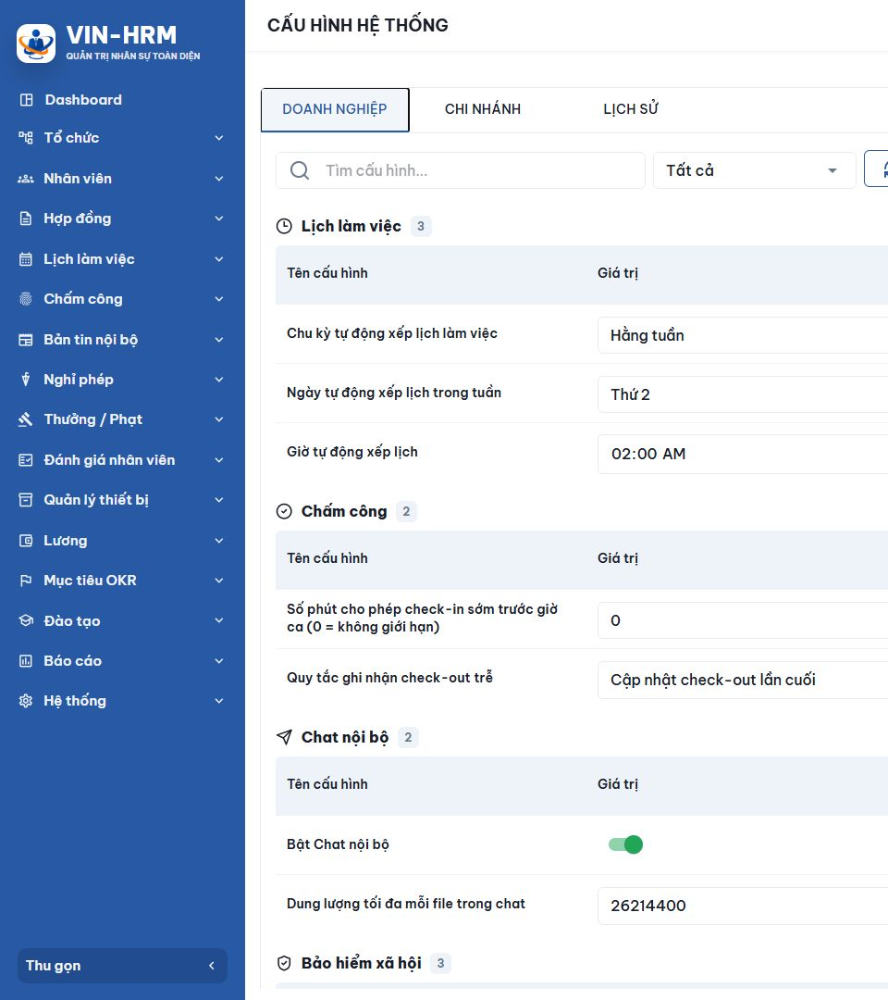
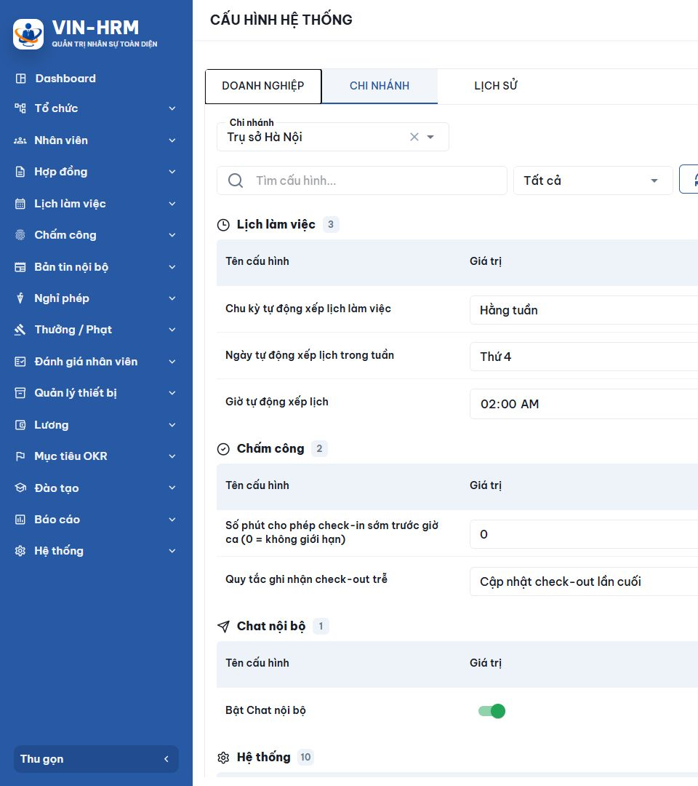
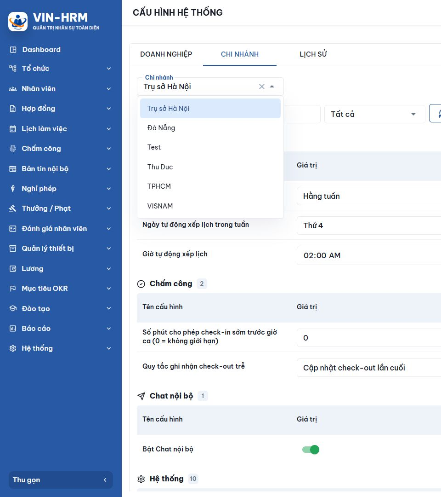
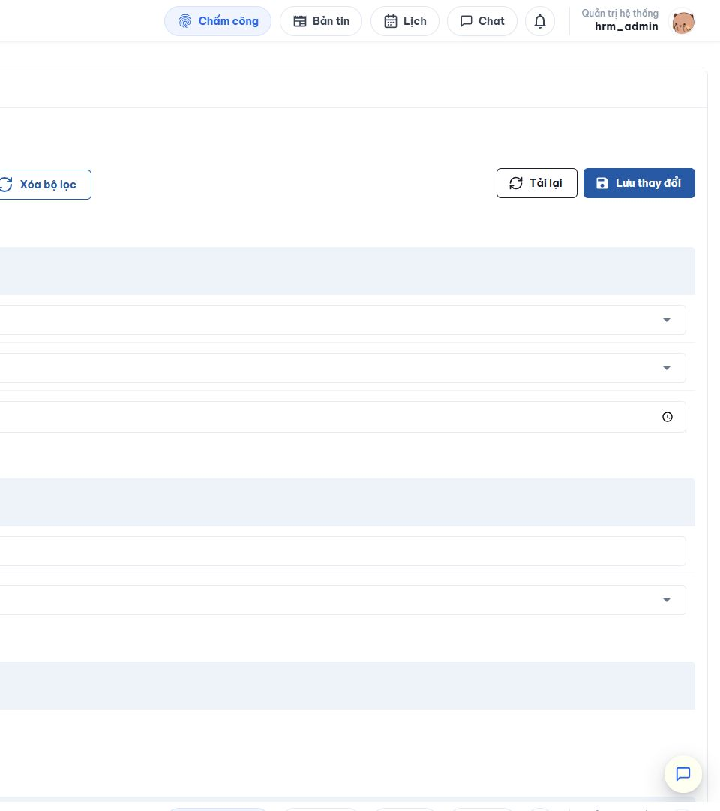
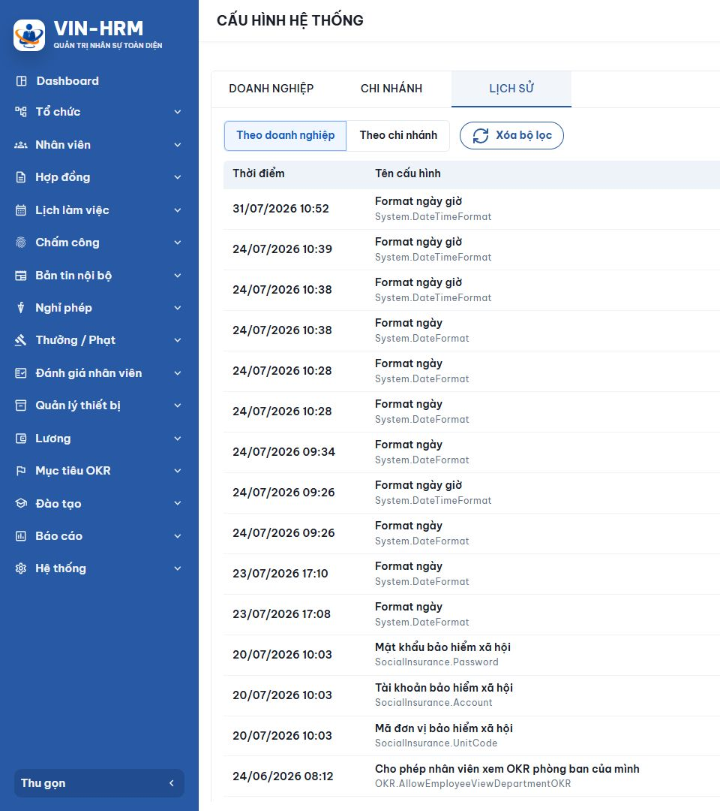
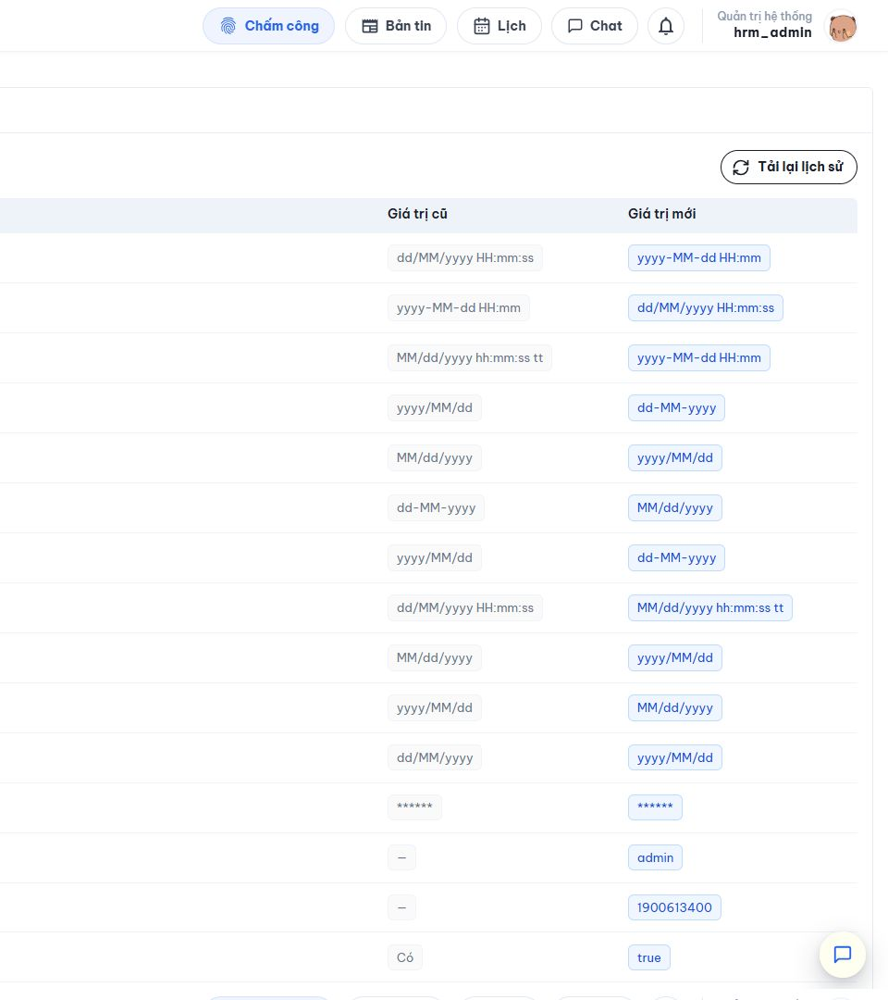

HƯỚNG DẪN SỬ DỤNG
CẤU HÌNH HỆ THỐNG
Cấu hình mặc định - Cấu hình theo doanh nghiệp - Cấu hình theo chi nhánh
Tài liệu dành cho người quản trị hệ thống VIN-HRM
| Phiên bản | 1.1 |
|---|---|
| Ngày đối chiếu | 14/08/2026 |
| Môi trường kiểm tra | Mã nguồn cục bộ, giao diện thực tế và bộ tài liệu nghiệp vụ VIN-HRM |
VIN-HRM - Quản trị nhân sự toàn diện
Mục lục
1. Mục đích và phạm vi
2. Cách hệ thống xác định giá trị cấu hình
3. Truy cập màn hình Cấu hình hệ thống
4. Cấu hình mặc định hệ thống
4.4 - 4.10. Ý nghĩa, module sử dụng và cách chọn từng cấu hình
5. Cấu hình theo doanh nghiệp
6. Cấu hình theo chi nhánh
7. Kiểm tra lịch sử thay đổi
8. Tình huống thường gặp và cách xử lý
9. Checklist vận hành an toàn
10. Phụ lục
| Cách đọc tài liệu: Thực hiện lần lượt từ phần 2 đến phần 7 khi mới làm quen. Nếu đã biết đường dẫn màn hình, có thể đi thẳng tới phần cấu hình theo doanh nghiệp hoặc chi nhánh. |
1. Mục đích và phạm vi
Tài liệu này hướng dẫn người quản trị sử dụng màn hình Cấu hình hệ thống của VIN-HRM để hiểu giá trị mặc định, thiết lập giá trị áp dụng cho toàn doanh nghiệp, thiết lập giá trị riêng cho từng chi nhánh và kiểm tra lịch sử thay đổi.
Nội dung được đối chiếu từ tài liệu đặc tả nghiệp vụ '02. Cấu hình v1.0', toàn bộ 22 tài liệu nghiệp vụ hiện hành trong thư mục tài liệu HRM và phần mềm thực tế chạy bằng mã nguồn tại thời điểm ngày 14/08/2026. Tài khoản dùng để kiểm tra giao diện là tài khoản quản trị hrm_admin; mật khẩu không được ghi lại trong tài liệu.
Tài liệu tập trung vào các thao tác người dùng, không yêu cầu người đọc biết lập trình hoặc cấu trúc cơ sở dữ liệu.
1.1. Đối tượng sử dụng
- Quản trị viên hệ thống chịu trách nhiệm cấu hình các quy tắc dùng chung.
- Người phụ trách nhân sự cần hiểu giá trị đang được áp dụng để kiểm tra nghiệp vụ.
- Người hỗ trợ vận hành cần tra cứu lịch sử khi một quy tắc thay đổi ngoài dự kiến.
1.2. Điều quan trọng cần nhớ
| LƯU Ý: Phần mềm hiện có ba thẻ Doanh nghiệp, Chi nhánh và Lịch sử. Không có thẻ riêng mang tên 'Cấu hình mặc định'. Giá trị mặc định được hệ thống định nghĩa sẵn và được dùng tự động khi chưa có giá trị ghi đè. |
2. Cách hệ thống xác định giá trị cấu hình
Mỗi cấu hình được nhận diện bằng một mã khóa duy nhất. Khi cần sử dụng cấu hình, hệ thống tìm giá trị theo thứ tự ưu tiên từ phạm vi hẹp nhất đến phạm vi rộng nhất.
| Ưu tiên | Phạm vi | Khi nào được sử dụng |
|---|---|---|
| 1 - Cao nhất | Chi nhánh | Dùng khi chi nhánh đang làm việc có giá trị cấu hình riêng. |
| 2 | Doanh nghiệp | Dùng khi chi nhánh chưa có giá trị riêng nhưng doanh nghiệp đã cấu hình. |
| 3 - Nền | Mặc định hệ thống | Dùng khi cả chi nhánh và doanh nghiệp đều chưa có giá trị ghi đè. |
| Ví dụ thực tế: Trong ảnh chụp, doanh nghiệp đang có 'Ngày tự động xếp lịch trong tuần' là Thứ 2, còn chi nhánh Trụ sở Hà Nội hiển thị Thứ 4. Khi nghiệp vụ chạy cho Trụ sở Hà Nội, hệ thống dùng Thứ 4 vì cấu hình chi nhánh có ưu tiên cao hơn. |
2.1. Cấu hình chỉ áp dụng ở cấp doanh nghiệp
Một số cấu hình không được phép thay đổi theo chi nhánh. Trên phần mềm thực tế, các thông tin kết nối bảo hiểm xã hội và dung lượng tối đa mỗi tệp trong Chat nội bộ chỉ xuất hiện ở thẻ Doanh nghiệp. Đây là hành vi đúng; không phải dữ liệu chi nhánh bị thiếu.
3. Truy cập màn hình Cấu hình hệ thống
- Mở VIN-HRM và đăng nhập bằng tài khoản được cấp quyền quản trị.
- Trong thanh điều hướng bên trái, mở nhóm Hệ thống.
- Chọn Cấu hình. Tiêu đề ở đầu trang phải hiển thị CẤU HÌNH HỆ THỐNG.
- Kiểm tra ba thẻ Doanh nghiệp, Chi nhánh và Lịch sử trước khi thao tác.
| Kiểm tra quyền: Nếu không nhìn thấy mục Cấu hình hoặc chỉ có thể xem mà không thể lưu, hãy liên hệ người quản trị phân quyền. Không dùng tài khoản của người khác để thay đổi cấu hình. |
4. Cấu hình mặc định hệ thống
4.1. Cấu hình mặc định là gì?
Cấu hình mặc định là tập hợp các giá trị nền do hệ thống định nghĩa sẵn theo nghiệp vụ. Danh sách này được khai báo trong mã nguồn và đưa vào cơ sở dữ liệu trong quá trình khởi tạo hoặc nâng cấp hệ thống.
Người dùng không tạo mới, sửa hoặc xóa cấu hình mặc định trực tiếp trên giao diện. Khi doanh nghiệp chưa thiết lập một cấu hình, thẻ Doanh nghiệp hiển thị giá trị hiệu lực được lấy từ mặc định hệ thống. Tương tự, khi chi nhánh chưa có giá trị riêng, hệ thống tiếp tục tìm giá trị của doanh nghiệp rồi mới dùng mặc định.
| Không có màn hình sửa mặc định: Nếu cần thay đổi giá trị nền cho toàn bộ khách hàng hoặc toàn bộ hệ thống, yêu cầu này phải được xử lý trong quy trình phát triển và triển khai phần mềm. Không tự sửa trực tiếp dữ liệu nền. |
4.2. Các dạng giá trị hiển thị
| Dạng cấu hình | Cách hiển thị trên giao diện | Cách sử dụng |
|---|---|---|
| Danh sách chọn | Ô có mũi tên xổ xuống | Chọn một giá trị hợp lệ do hệ thống cung cấp. |
| Bật / tắt | Công tắc | Bật hoặc tắt quy tắc. Công tắc màu xanh thường biểu thị đang bật. |
| Số | Ô nhập số | Chỉ nhập số trong phạm vi nghiệp vụ cho phép. |
| Thời gian | Ô chọn giờ | Chọn hoặc nhập thời gian theo định dạng của trình duyệt. |
| Văn bản | Ô nhập chữ | Nhập nội dung theo yêu cầu của cấu hình. |
| Mật khẩu | Ô nhập được che | Nhập bí mật; có thể dùng biểu tượng con mắt để kiểm tra tạm thời. |
4.3. Một số ví dụ cấu hình nền
Tùy phiên bản, danh sách có thể thay đổi. Các nhóm quan sát được trên phần mềm gồm Lịch làm việc, Chấm công, Chat nội bộ, Bảo hiểm xã hội và Hệ thống. Tài liệu đặc tả cũng mô tả các mã như chu kỳ xếp lịch, định dạng ngày, khoảng thời gian check-in sớm và mức giảm trừ khi tính thuế.
Các ví dụ thường gặp gồm chu kỳ tự động xếp lịch làm việc; ngày hoặc giờ tự động xếp lịch; quy tắc ghi nhận check-out trễ; định dạng ngày và ngày giờ; cùng các công tắc cho Chat nội bộ, tính lương hoặc OKR.
| Phạm vi danh sách dưới đây: Phần mềm được kiểm tra có 21 cấu hình đang hoạt động. Các tài liệu cũ có nhắc tới cấu hình chọn quy trình phê duyệt, nhưng phiên bản hiện tại không còn đưa các khóa đó vào danh sách cấu hình mặc định. Quy trình phê duyệt được thiết lập tại module Quy trình phê duyệt và tại từng nghiệp vụ liên quan. |
4.4. Nhóm Lịch làm việc - tự động xếp lịch
Nhóm này được module Lịch làm việc sử dụng để tự sinh lịch cho nhân viên có hình thức làm việc cố định và đã được gán mẫu lịch ca hợp lệ. Lịch được sinh là đầu vào để module Chấm công đối chiếu giờ vào, giờ ra và để module Tính lương xác định giờ làm việc chuẩn. Hệ thống không ghi đè lịch đã có, bỏ qua ngày lễ và bỏ qua nhân viên không có mẫu lịch ca phù hợp.
Chu kỳ tự động xếp lịch làm việc - Scheduling.Auto.Frequency
Giá trị nền: Hằng tuần. Có thể cấu hình ở doanh nghiệp hoặc chi nhánh.
Ý nghĩa: Xác định hệ thống chạy việc sinh lịch theo nhịp hằng tuần hay hằng tháng. Đây là chu kỳ chạy tự động, không phải chu kỳ lương và cũng không phải độ dài của ca làm việc.
Các lựa chọn: Hằng tuần - vào ngày và giờ đã chọn, hệ thống sinh lịch từ ngày chạy đến 6 ngày tiếp theo. Hằng tháng - vào ngày và giờ đã chọn, hệ thống sinh lịch từ ngày chạy đến ngày cuối cùng của tháng.
Ngày tự động xếp lịch trong tuần - Scheduling.Auto.DayOfWeek
Giá trị nền: Thứ 2. Chỉ hiển thị khi chu kỳ là Hằng tuần.
Ý nghĩa: Chọn ngày hệ thống bắt đầu sinh lịch cho một tuần. Các lựa chọn gồm Thứ 2, Thứ 3, Thứ 4, Thứ 5, Thứ 6, Thứ 7 và Chủ nhật.
Ví dụ: Nếu chọn Thứ 4 và giờ chạy là 02:00, vào 02:00 mỗi Thứ 4 hệ thống tạo lịch từ Thứ 4 hiện tại đến hết Thứ 3 tuần kế tiếp.
Ngày tự động xếp lịch trong tháng - Scheduling.Auto.DayOfMonth
Giá trị nền: Ngày 1. Chỉ hiển thị khi chu kỳ là Hằng tháng.
Ý nghĩa: Chọn ngày hệ thống chạy sinh lịch trong tháng. Giá trị hợp lệ từ 1 đến 31.
Cách xử lý tháng ngắn: Nếu chọn ngày 29, 30 hoặc 31 nhưng tháng không có ngày đó, hệ thống chạy vào ngày cuối cùng của tháng. Lịch được sinh từ ngày chạy đến cuối tháng; vì vậy chọn ngày 15 không tạo lịch cho các ngày 1 đến 14.
Giờ tự động xếp lịch - Scheduling.Auto.RunTime
Giá trị nền: 02:00. Có thể cấu hình ở doanh nghiệp hoặc chi nhánh.
Ý nghĩa: Xác định giờ bắt đầu tác vụ sinh lịch trong ngày đã chọn. Hệ thống kiểm tra cấu hình theo định kỳ 5 phút, vì vậy tác vụ có thể bắt đầu trong khoảng kiểm tra gần nhất sau giờ cấu hình.
Khuyến nghị: Chọn giờ ít người thao tác lịch, thường là ngoài giờ làm việc; sau đó kiểm tra lịch đã sinh và lịch sử tác vụ trước khi nhân viên chấm công.
| Hiểu đúng chu kỳ: Nếu chọn Hằng tuần, mỗi lần chạy chỉ tạo 7 ngày tính từ ngày chạy. Nếu chọn Hằng tháng, mỗi lần chạy chỉ tạo từ ngày chạy đến cuối tháng. Hãy chọn ngày chạy đủ sớm để tránh nhân viên chưa có lịch tại thời điểm chấm công. |
4.5. Nhóm Chấm công
Hai cấu hình này được module Chấm công sử dụng khi nhân viên tự ghi nhận giờ vào, giờ ra và khi nhân sự điều chỉnh dữ liệu chấm công.
Số phút cho phép ghi nhận giờ vào sớm trước giờ ca - Attendance.CheckIn.BufferMinutes
Giá trị nền: 0 phút. Có thể cấu hình ở doanh nghiệp hoặc chi nhánh.
Ý nghĩa: Giới hạn nhân viên được ghi nhận giờ vào sớm tối đa bao nhiêu phút trước giờ bắt đầu ca. Cấu hình cũng được dùng khi nhân sự nhập hoặc điều chỉnh giờ vào.
Cách hiểu giá trị: 0 nghĩa là không giới hạn thời điểm vào sớm. Số lớn hơn 0 là số phút tối đa; ví dụ nhập 30 thì ca bắt đầu lúc 08:00 chỉ cho ghi nhận từ 07:30. Ghi nhận sớm hơn sẽ bị từ chối. Cấu hình này không cho phép ghi nhận giờ vào sau khi ca đã kết thúc.
Quy tắc ghi nhận giờ ra trễ - Attendance.CheckOut.Method
Giá trị nền: Chỉ ghi nhận lần ra trễ đầu tiên. Có thể cấu hình ở doanh nghiệp hoặc chi nhánh.
Lựa chọn 1 - Chỉ ghi nhận lần ra trễ đầu tiên: Sau giờ kết thúc ca, hệ thống lưu lần ra đầu tiên và không thay đổi nếu nhân viên tiếp tục ghi nhận giờ ra thêm lần nữa. Phù hợp khi doanh nghiệp muốn lấy thời điểm kết thúc công việc đầu tiên.
Lựa chọn 2 - Cập nhật lần ra cuối: Mỗi lần ghi nhận giờ ra sau ca sẽ cập nhật thành thời điểm mới nhất. Phù hợp khi cần lấy lần rời nơi làm việc cuối cùng. Trong thời gian ca hoặc khi ra sớm, hệ thống vẫn cập nhật giờ ra theo lần thao tác hiện tại.
4.6. Nhóm Hệ thống - định dạng ngày, giờ
Định dạng ngày - System.DateFormat
Giá trị nền: dd/MM/yyyy.
Ý nghĩa: Là chuẩn dự kiến để hiển thị ngày: dd là ngày hai chữ số, MM là tháng hai chữ số, yyyy là năm bốn chữ số. Ví dụ ngày 14 tháng 8 năm 2026 hiển thị là 14/08/2026.
Lưu ý phiên bản: Trong mã nguồn được kiểm tra, cấu hình này đã có trên màn hình nhưng chưa được các module nghiệp vụ đọc trực tiếp. Vì vậy thay đổi giá trị có thể chưa làm toàn bộ màn hình và báo cáo đổi định dạng ngay.
Định dạng ngày giờ - System.DateTimeFormat
Giá trị nền: dd/MM/yyyy HH:mm:ss.
Ý nghĩa: Ngoài ngày, cấu hình có HH là giờ theo hệ 24 giờ, mm là phút và ss là giây. Ví dụ: 14/08/2026 16:05:30.
Lưu ý phiên bản: Tương tự định dạng ngày, cấu hình đang hiện trên giao diện nhưng chưa có điểm sử dụng trực tiếp trong các module được kiểm tra. Không nên dùng thay đổi này làm cách duy nhất để chuẩn hóa toàn bộ báo cáo.
4.7. Nhóm Hệ thống - Tính lương và thuế
Trên giao diện hiện tại, các cấu hình Tính lương và OKR được xếp chung trong nhóm Hệ thống. Điều này chỉ là cách sắp xếp hiển thị; ý nghĩa nghiệp vụ vẫn thuộc module Tính lương và module OKR.
Mức giảm trừ đối với người nộp thuế theo tháng - Payroll.TaxpayerDeduction
Giá trị nền của phiên bản được kiểm tra: 15.500.000 đồng/tháng.
Ý nghĩa: Module Tính lương dùng số tiền này khi xác định giảm trừ cho bản thân người nộp thuế, đặc biệt khi hồ sơ thuế nhân viên chưa có giá trị riêng theo thời gian.
Phạm vi: Có thể cấu hình theo doanh nghiệp hoặc chi nhánh. Trước khi thay đổi, bộ phận nhân sự và kế toán cần xác nhận thời điểm áp dụng và quy định đang có hiệu lực; không tự sao chép số liệu từ kỳ lương cũ.
Mức giảm trừ đối với người phụ thuộc theo tháng - Payroll.DependentDeduction
Giá trị nền của phiên bản được kiểm tra: 6.200.000 đồng/người/tháng.
Ý nghĩa: Module Tính lương nhân mức này với số người phụ thuộc hợp lệ của nhân viên để xác định tổng giảm trừ người phụ thuộc trong kỳ.
Phạm vi: Có thể cấu hình theo doanh nghiệp hoặc chi nhánh. Cần kiểm tra hồ sơ đăng ký người phụ thuộc và thời gian hiệu lực trước khi tính lại lương.
Tính lương dựa trên dữ liệu chấm công - Payroll.CalculateBaseOnAttendance
Giá trị nền: Không.
Lựa chọn Có: Module Tính lương lấy giờ làm việc thực tế từ dữ liệu chấm công và cộng thời gian chuẩn của ngày nghỉ phép có lương. Nhân viên thiếu dữ liệu chấm công có thể bị thiếu giờ tính lương.
Lựa chọn Không: Hệ thống không phụ thuộc vào giờ vào, giờ ra để xác định giờ thực tế; thay vào đó dùng tổng giờ làm việc chuẩn theo lịch và trừ thời gian nghỉ không lương.
Lưu ý phạm vi: Phiên bản mã nguồn được kiểm tra đang đọc giá trị ở cấp doanh nghiệp khi tính lương. Không nên trông chờ một giá trị ghi đè ở chi nhánh sẽ làm thay đổi kết quả lương nếu chưa được bộ phận kỹ thuật xác nhận.
4.8. Nhóm Chat nội bộ
Bật Chat nội bộ - Chat.Enabled
Giá trị nền: Có.
Lựa chọn Có: Người dùng có quyền Chat và thuộc chi nhánh đang bật có thể sử dụng danh bạ, hội thoại và gửi tin nhắn. Lựa chọn Không: Ẩn hoặc chặn khả năng sử dụng Chat theo phạm vi cấu hình.
Quan hệ doanh nghiệp - chi nhánh: Công tắc doanh nghiệp là công tắc tổng. Doanh nghiệp tắt thì mọi chi nhánh đều tắt và chi nhánh không thể bật lại. Khi doanh nghiệp bật, từng chi nhánh có thể tắt riêng. Người làm việc ở nhiều chi nhánh được dùng Chat nếu có ít nhất một chi nhánh đang bật và vẫn có quyền Chat.
Dung lượng tối đa mỗi tệp trong Chat - Chat.MaxAttachmentSizeBytes
Giá trị nền: 26.214.400 byte, tương đương 25 MB. Chỉ cấu hình ở cấp doanh nghiệp.
Ý nghĩa: Giới hạn dung lượng của từng tệp được gửi trong tin nhắn Chat. Nếu một tệp lớn hơn giới hạn, hệ thống từ chối gửi và thông báo dung lượng tối đa theo MB. Quy tắc cố định hiện tại còn giới hạn tối đa 10 tệp trong một lần gửi.
Cách nhập: Giao diện nhận số byte lớn hơn 0. Quy đổi thường dùng: 10 MB = 10.485.760 byte; 25 MB = 26.214.400 byte; 50 MB = 52.428.800 byte.
4.9. Nhóm OKR
Các cấu hình dưới đây điều khiển module Quản lý mục tiêu OKR. Trong phiên bản mã nguồn được kiểm tra, module OKR đọc giá trị ở cấp doanh nghiệp; thay đổi cùng khóa ở chi nhánh có thể được lưu nhưng chưa làm thay đổi hành vi OKR.
Cho phép nhân viên tự tạo OKR cá nhân - OKR.AllowEmployeeCreateObjective
Giá trị nền: Có.
Có: Nhân viên có quyền phù hợp được tạo mục tiêu mà chính mình là người sở hữu. Không: Nhân viên không tự tạo mục tiêu cho bản thân; người quản lý hoặc người có quyền quản trị OKR vẫn có thể tạo theo phạm vi quyền được cấp.
Yêu cầu duyệt OKR trước khi áp dụng - OKR.RequireApproval
Giá trị nền: Không.
Ý nghĩa nghiệp vụ: Có được hiểu là mục tiêu cần hoàn tất bước duyệt trước khi chuyển sang áp dụng; Không cho phép áp dụng trực tiếp khi dữ liệu hợp lệ.
Lưu ý phiên bản: Cấu hình này đang hiển thị trên màn hình nhưng chưa có điểm đọc tương ứng trong mã nguồn OKR được kiểm tra. Trước khi dùng làm quy tắc kiểm soát bắt buộc, hãy thử đầy đủ luồng tạo - gửi duyệt - áp dụng hoặc yêu cầu bộ phận kỹ thuật xác nhận.
Cho phép cập nhật tiến độ sau ngày kết thúc chu kỳ - OKR.AllowCheckInAfterDueDate
Giá trị nền: Không.
Không: Sau ngày kết thúc chu kỳ, hệ thống từ chối cập nhật tiến độ. Có: Vẫn được cập nhật sau hạn nếu chu kỳ chưa đóng hoặc chưa hủy. Dù bật, chu kỳ đã đóng hoặc đã hủy vẫn không được cập nhật.
Cho phép nhân viên xem OKR cấp công ty - OKR.AllowEmployeeViewCompanyOKR
Giá trị nền: Có.
Có: Nhân viên thông thường có thể xem các mục tiêu công khai ở cấp công ty theo quyền. Không: Loại mục tiêu công ty khỏi phạm vi xem thông thường. Người có quyền quản lý toàn bộ OKR vẫn có thể xem theo quyền quản trị.
Cho phép nhân viên xem OKR phòng ban của mình - OKR.AllowEmployeeViewDepartmentOKR
Giá trị nền: Có.
Có: Nhân viên có thể xem mục tiêu công khai của phòng ban mình đang làm việc. Không: Không mở rộng quyền xem theo phòng ban cho nhân viên thông thường. Người quản lý có quyền quản lý nhân viên phòng ban vẫn có thể xem theo phạm vi quyền.
4.10. Nhóm Bảo hiểm xã hội
Ba cấu hình này là thông tin kết nối tới dịch vụ VIN-BHXH, được dùng khi gửi hồ sơ, tra cứu hoặc đồng bộ kết quả trong các nghiệp vụ hồ sơ bảo hiểm xã hội, bao gồm thủ tục 600 và hồ sơ hưởng chế độ thủ tục 630. Cả ba chỉ được cấu hình ở cấp doanh nghiệp và mặc định để trống.
Mã đơn vị bảo hiểm xã hội - SocialInsurance.UnitCode
Ý nghĩa: Mã nhận diện đơn vị tham gia bảo hiểm do hệ thống VIN-BHXH cấp. Nhập đúng mã của doanh nghiệp; không dùng mã chi nhánh nội bộ nếu mã đó không phải mã do cơ quan bảo hiểm cấp.
Tài khoản bảo hiểm xã hội - SocialInsurance.Account
Ý nghĩa: Tên đăng nhập dùng để hệ thống xin quyền kết nối với VIN-BHXH khi gửi hoặc đồng bộ hồ sơ. Tài khoản phải thuộc đúng mã đơn vị ở cấu hình phía trên.
Mật khẩu bảo hiểm xã hội - SocialInsurance.Password
Ý nghĩa: Mật khẩu của tài khoản VIN-BHXH. Giá trị được che bằng ****** trong lịch sử cấu hình. Chỉ người được ủy quyền mới được nhập hoặc thay đổi; không ghi mật khẩu vào tài liệu, tin nhắn hoặc ảnh chụp hỗ trợ.
| Điều kiện gửi hồ sơ: Nếu thiếu mã đơn vị, tài khoản hoặc mật khẩu, hệ thống dừng thao tác và báo thiếu thông tin cấu hình bảo hiểm xã hội. Sau khi thay đổi thông tin, nên thử kết nối bằng một nghiệp vụ phù hợp và kiểm tra kết quả trước khi xử lý hàng loạt. |
5. Cấu hình theo doanh nghiệp
Cấu hình theo doanh nghiệp áp dụng cho toàn bộ doanh nghiệp và cho tất cả chi nhánh chưa có thiết lập riêng. Đây là cấp nên dùng cho các quy tắc chung như định dạng ngày, nguyên tắc tính lương, chính sách Chat nội bộ hoặc lịch tự động dùng chung. Giá trị trên thẻ là giá trị hiệu lực; giao diện hiện chưa gắn nhãn để cho biết từng dòng đến từ mặc định hệ thống hay một lần ghi đè trước đó.
Ảnh chụp giao diện thực tế
 |  |
| Các vị trí cần chú ý: Phía trên là ba thẻ phạm vi. Thanh công cụ có ô Tìm cấu hình, danh sách nhóm, nút Xóa bộ lọc, Tải lại và Lưu thay đổi. Phần dưới được chia thành các nhóm cấu hình để dễ theo dõi. |
5.1. Tìm và lọc cấu hình
- Chọn thẻ Doanh nghiệp.
- Nếu biết tên hoặc mã cấu hình, nhập từ khóa vào ô Tìm cấu hình. Có thể tìm theo mô tả, mã khóa hoặc loại dữ liệu.
- Nếu muốn xem theo nhóm, mở danh sách đang hiển thị Tất cả rồi chọn Workflow, Lịch làm việc, Chấm công, Chat nội bộ, Bảo hiểm xã hội hoặc Hệ thống.
- Chọn Xóa bộ lọc để xóa từ khóa và trở lại nhóm Tất cả.
| Xóa bộ lọc không xóa dữ liệu: Nút Xóa bộ lọc chỉ đưa điều kiện tìm kiếm về ban đầu. Nút này không hoàn tác các giá trị đã nhập và không xóa cấu hình đã lưu. |
5.2. Chỉnh sửa giá trị
- Xác định đúng dòng cấu hình qua cột Tên cấu hình.
- Thay đổi giá trị ở cột Giá trị bằng danh sách chọn, công tắc, ô số, ô thời gian hoặc ô văn bản tương ứng.
- Rà soát các trường liên quan. Ví dụ, khi chu kỳ xếp lịch là Hằng tuần, hệ thống hiển thị ngày trong tuần; khi chọn Hằng tháng, phải chọn ngày trong tháng.
- Kiểm tra lại ảnh hưởng đối với toàn bộ chi nhánh trước khi lưu.
| Ràng buộc ngày trong tháng: Nếu chọn chu kỳ Hằng tháng, ngày tự động xếp lịch phải từ 1 đến 31. Khi nhập sai, hệ thống hiển thị: 'Ngày tự động xếp lịch trong tháng chỉ được nhập giá trị từ 1 đến 31.' |
5.3. Lưu cấu hình doanh nghiệp
- Sau khi kiểm tra, chọn Lưu thay đổi ở góc phải thanh công cụ.
- Chờ hệ thống xử lý; không nhấn nhiều lần liên tiếp.
- Khi thành công, hệ thống hiển thị thông báo 'Lưu cấu hình doanh nghiệp thành công'.
- Mở thẻ Lịch sử để xác nhận giá trị cũ và giá trị mới nếu thay đổi quan trọng.
| Tải lại: Nút Tải lại lấy lại dữ liệu đã lưu từ máy chủ. Nếu đang có thay đổi chưa lưu, hãy kiểm tra kỹ trước khi dùng vì dữ liệu trên màn hình sẽ được nạp lại. |
5.4. Ảnh hưởng của công tắc Chat nội bộ
Công tắc Bật Chat nội bộ ở cấp doanh nghiệp là công tắc cha. Khi doanh nghiệp tắt Chat nội bộ, chi nhánh không thể bật lại. Trên thẻ Chi nhánh, dòng này sẽ bị vô hiệu hóa và hiển thị lý do.
6. Cấu hình theo chi nhánh
Cấu hình theo chi nhánh chỉ áp dụng cho chi nhánh được chọn. Hãy dùng cấp này khi chi nhánh có lịch làm việc, quy tắc vận hành hoặc chính sách khác với phần còn lại của doanh nghiệp.
Ảnh chụp giao diện thực tế
 |  |
| Điểm khác với thẻ Doanh nghiệp: Thẻ Chi nhánh có thêm ô chọn Chi nhánh ở đầu nội dung. Mọi thay đổi và thao tác lưu chỉ áp dụng cho chi nhánh đang hiển thị trong ô này. |
6.1. Chọn đúng chi nhánh
- Chọn thẻ Chi nhánh.
- Mở danh sách Chi nhánh ở đầu trang.
- Chọn đúng tên chi nhánh cần cấu hình. Trong lần kiểm tra, phần mềm tự chọn chi nhánh đang hoạt động đầu tiên là Trụ sở Hà Nội.
- Chờ danh sách cấu hình tải xong rồi mới chỉnh sửa.
Ảnh chụp giao diện thực tế
 |  |
| Kiểm tra tên chi nhánh: Không dựa vào vị trí đầu tiên trong danh sách. Luôn đọc lại tên chi nhánh đang hiển thị trước khi nhấn Lưu thay đổi. |
6.2. Hiểu giá trị ban đầu trên thẻ Chi nhánh
Khi chi nhánh chưa có giá trị riêng, màn hình hiển thị giá trị hiệu lực từ doanh nghiệp; nếu doanh nghiệp cũng chưa cấu hình, màn hình hiển thị mặc định hệ thống. Vì vậy một giá trị hiển thị sẵn không đồng nghĩa với việc chi nhánh đã có bản ghi ghi đè.
| Không có nhãn nguồn: Giao diện hiện chưa chỉ rõ từng giá trị đến từ chi nhánh, doanh nghiệp hay mặc định. Khi cần xác định nguồn chính xác, hãy kết hợp thẻ Lịch sử và hỗ trợ kỹ thuật. |
6.3. Chỉnh sửa và lưu
- Sau khi chọn chi nhánh, tìm cấu hình bằng ô tìm kiếm hoặc bộ lọc nhóm.
- Thay đổi đúng giá trị cần ghi đè. Các trường chỉ áp dụng ở cấp doanh nghiệp sẽ không xuất hiện.
- Kiểm tra lại tên chi nhánh, giá trị mới và ảnh hưởng nghiệp vụ.
- Chọn Lưu thay đổi.
- Khi thành công, hệ thống hiển thị 'Lưu cấu hình chi nhánh thành công'.
- Mở Lịch sử, chọn Theo chi nhánh và đúng chi nhánh để xác nhận.
6.4. Ví dụ: đổi ngày xếp lịch cho một chi nhánh
- Chọn thẻ Chi nhánh và chọn Trụ sở Hà Nội.
- Lọc nhóm Lịch làm việc.
- Giữ Chu kỳ tự động xếp lịch làm việc là Hằng tuần.
- Chọn ngày phù hợp tại dòng Ngày tự động xếp lịch trong tuần.
- Chọn Lưu thay đổi và kiểm tra lịch sử theo chi nhánh.
| Khôi phục kế thừa: Giao diện hiện không có nút 'Xóa ghi đè' hoặc 'Dùng lại giá trị doanh nghiệp'. Nhập một giá trị trùng với doanh nghiệp không đồng nghĩa với xóa ghi đè; chi nhánh có thể vẫn giữ một giá trị riêng. Nếu cần quay lại cơ chế kế thừa động, hãy liên hệ quản trị kỹ thuật. |
7. Kiểm tra lịch sử thay đổi
Thẻ Lịch sử giúp kiểm tra một cấu hình đã thay đổi khi nào và thay đổi từ giá trị nào sang giá trị nào. Đây là bước bắt buộc sau các thay đổi có ảnh hưởng lớn.
Ảnh chụp giao diện thực tế
 |  |
7.1. Xem lịch sử theo doanh nghiệp
- Chọn thẻ Lịch sử.
- Chọn Theo doanh nghiệp.
- Đọc các cột Thời điểm, Tên cấu hình, Giá trị cũ và Giá trị mới.
- Chọn Tải lại lịch sử nếu vừa lưu cấu hình nhưng chưa thấy bản ghi mới.
7.2. Xem lịch sử theo chi nhánh
- Chọn Theo chi nhánh.
- Chọn chi nhánh cần kiểm tra trong danh sách xuất hiện.
- Đối chiếu tên cấu hình, giá trị cũ và giá trị mới.
- Chọn Xóa bộ lọc để quay về phạm vi Theo doanh nghiệp khi cần.
| Bảo vệ thông tin nhạy cảm: Lịch sử che giá trị của cấu hình mật khẩu bằng dấu ******. Không chụp, sao chép hoặc gửi mật khẩu thật qua tài liệu hỗ trợ. |
8. Tình huống thường gặp và cách xử lý
| Tình huống | Nguyên nhân thường gặp | Cách xử lý |
|---|---|---|
| Không thấy cấu hình cần tìm | Đang có từ khóa hoặc bộ lọc nhóm. | Chọn Xóa bộ lọc, sau đó tìm lại bằng tên hoặc mã khóa. |
| Không có dữ liệu chi nhánh | Chưa chọn chi nhánh hoặc không có chi nhánh đang hoạt động. | Chọn chi nhánh; nếu danh sách trống, kiểm tra trạng thái chi nhánh trong phần Tổ chức. |
| Không lưu được ngày trong tháng | Giá trị ngoài khoảng 1 đến 31. | Nhập số từ 1 đến 31 rồi lưu lại. |
| Không bật được Chat ở chi nhánh | Chat đã tắt ở cấp doanh nghiệp. | Đánh giá chính sách và bật ở doanh nghiệp trước; chi nhánh không được vượt công tắc cha. |
| Giá trị thay đổi sau khi bấm Tải lại | Có chỉnh sửa chưa lưu hoặc dữ liệu máy chủ đã thay đổi. | Nhập lại nếu cần, rà soát và lưu; kiểm tra lịch sử để xác định thay đổi gần nhất. |
| Không biết giá trị đến từ cấp nào | Giao diện chỉ hiển thị giá trị hiệu lực. | Đối chiếu doanh nghiệp, chi nhánh, lịch sử; liên hệ hỗ trợ kỹ thuật nếu cần xác định bản ghi ghi đè. |
| Muốn trả chi nhánh về kế thừa | Không có nút xóa ghi đè trên giao diện. | Không chỉ nhập lại giá trị giống doanh nghiệp. Gửi yêu cầu cho quản trị kỹ thuật để xóa ghi đè đúng cách. |
9. Checklist vận hành an toàn
9.1. Trước khi lưu
- Đang ở đúng thẻ Doanh nghiệp hoặc Chi nhánh.
- Nếu ở thẻ Chi nhánh, tên chi nhánh đã được kiểm tra lại.
- Đã hiểu ảnh hưởng của cấu hình đối với lịch làm việc, chấm công, lương, Chat, bảo hiểm hoặc OKR.
- Giá trị nhập đúng kiểu dữ liệu và đúng phạm vi.
- Đã thông báo cho bộ phận liên quan nếu thay đổi có tác động rộng.
- Không có thông tin bí mật đang hiển thị rõ trên màn hình chia sẻ.
9.2. Sau khi lưu
- Đã thấy thông báo lưu thành công.
- Đã tải lại hoặc mở lại thẻ để xác nhận giá trị hiệu lực.
- Đã kiểm tra lịch sử đúng phạm vi.
- Đã thử nghiệp vụ liên quan nếu thay đổi có rủi ro cao.
- Đã ghi nhận lý do thay đổi theo quy trình nội bộ của doanh nghiệp.
| Nguyên tắc: Chỉ thay đổi những cấu hình cần thiết. Không chỉnh nhiều nhóm trong cùng một lần nếu không có kế hoạch kiểm tra, vì sẽ khó xác định nguyên nhân khi nghiệp vụ thay đổi. |
10. Phụ lục
10.1. Thuật ngữ
| Thuật ngữ | Giải thích |
|---|---|
| Cấu hình mặc định | Giá trị nền do hệ thống định nghĩa sẵn. |
| Ghi đè | Giá trị ở cấp doanh nghiệp hoặc chi nhánh thay thế giá trị cấp thấp hơn trong thứ tự ưu tiên. |
| Giá trị hiệu lực | Giá trị cuối cùng hệ thống sử dụng sau khi áp dụng thứ tự chi nhánh, doanh nghiệp, mặc định. |
| Mã khóa | Mã nhận diện duy nhất của cấu hình, ví dụ System.DateFormat. |
| Cấu hình chỉ ở doanh nghiệp | Cấu hình không được phép ghi đè theo chi nhánh. |
10.2. Thông báo thành công cần ghi nhận
- Lưu cấu hình doanh nghiệp thành công
- Lưu cấu hình chi nhánh thành công
10.3. Nguồn đối chiếu
Tài liệu đặc tả nghiệp vụ: 02. Cấu hình v1.0
Bộ tài liệu nghiệp vụ hiện hành: Thư mục tài liệu HRM trên Google Drive. Nội dung liên quan được đối chiếu giữa tài liệu Tổng quan, Cấu hình, Lịch làm việc, Chấm công, Tính lương, OKR, Chat nội bộ và các module nghiệp vụ có sử dụng quy trình hoặc tệp đính kèm.
Giao diện và hành vi được kiểm tra từ mã nguồn VIN-HRM chạy cục bộ, kết nối môi trường dữ liệu được cấu hình trong dự án, vào ngày 14/08/2026.
| Lưu ý phiên bản: Tên nhóm, số lượng cấu hình và giá trị có thể thay đổi theo phiên bản phần mềm hoặc theo dữ liệu doanh nghiệp. Khi giao diện khác tài liệu, ưu tiên kiểm tra phiên bản đang triển khai và liên hệ bộ phận quản trị hệ thống. |